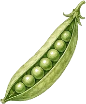

Crop Guide
Growing and kitchen notes for common fruit and vegetables, plus sowing, spacing, harvest and varieties. Lines in this demo catalogue are marked on the page.

Open to everyone
Crop notes, month-by-month jobs, and local tips for clay soil in Nottinghamshire and the East Midlands. Nothing here is locked.
Growing and kitchen notes for common fruit and vegetables, plus sowing, spacing, harvest and varieties. Lines in this demo catalogue are marked on the page.
What to do each month on East Midlands clay and no-dig beds.
Clay soil, no-dig, frost dates, pests, and a few local allotment sites.
A Kings Seeds catalogue you can browse and add to a basket. Demo only: no payment, and the order is not sent.